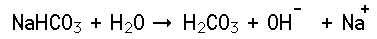
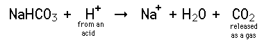

Sodium Bicarbonate
|
Sodium bicarbonate is a weak base which is commonly known as baking soda and used in cooking. It weakly ionizes in water:
|

In reaction with an acid, it liberates carbon dioxide gas:

This reaction is an important part of the leavening which takes place in baking. Baking powder contains sodium bicarbonate and a weak acid (cream of tartar) in dry form. No reaction occurs in the dry powder, but when water is added for cooking, the reaction above occurs to release carbon dioxide to make the baked item "rise".
|
Index
Base Concepts
Chemistry concepts |